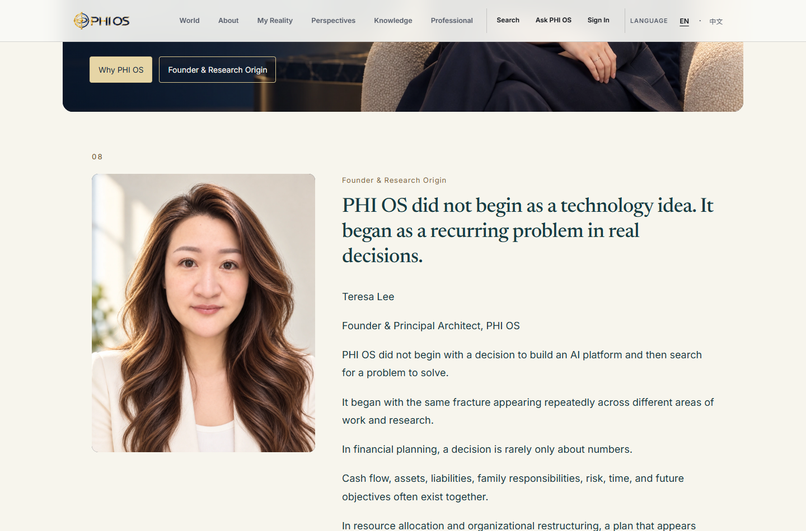
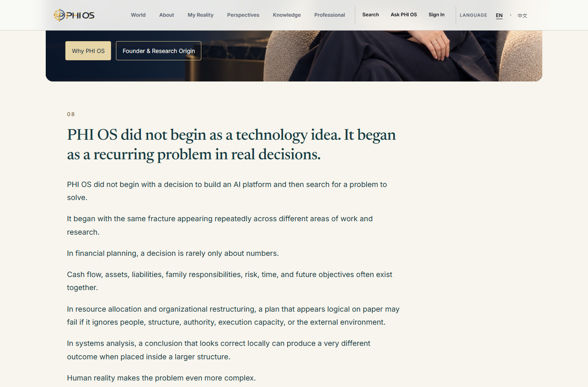
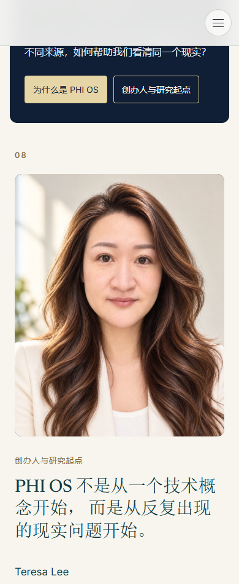
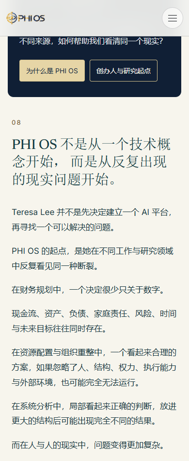
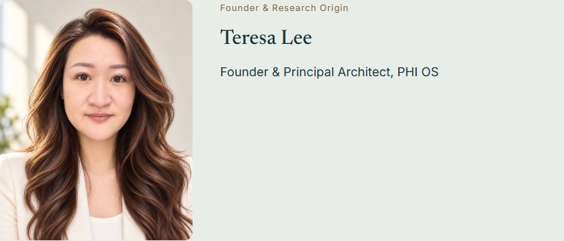

SOURCE：限定布局通过；LOCAL_BROWSER：8/8；未构建、未部署、未提交或推送。
打开本地完整页面 · 中文 · English · 实际 diff · 版本和检查收据
Hero DOM及图片完全保留。研究起点31个源段落仍在Hero后，以同一左边界、单列正文呈现，桌面宽820px。原有两段完整非人物内容与原配图从折叠正文移至前段。第二张portrait、姓名、职务和原创办人引言移入后半段既有研究边界S07，不新建人物版块。保留原配色与全部现有正文/章节锚点。





| 语言 | 视口 | 正文宽 | Portrait宽 | 结果 |
|---|---|---|---|---|
| en | 1440 | 820 | 280 | PASS |
| en | 1280 | 820 | 280 | PASS |
| en | 390 | 342 | 220 | PASS |
| en | 375 | 327 | 220 | PASS |
| zh-Hans | 1440 | 820 | 280 | PASS |
| zh-Hans | 1280 | 820 | 280 | PASS |
| zh-Hans | 390 | 342 | 220 | PASS |
| zh-Hans | 375 | 327 | 220 | PASS |
8项均无横向溢出和JS错误。原Hero、第二张portrait及两张复用图示均实际解码。手机portrait高度小于300px，正文标题、首段与最后可见段落的左边界一致。旧有空译文节点按原locale owner隐藏，并未删除。
旧Founder R2 checker仍在中文S06.body.15、S06.body.20的既存英中术语差异处失败。对应locale文件与本轮起始HEAD字节相同，本轮没有改译文、接受记录或checker。没有把全套历史检查写成PASS。
原始失败 · 来源未改的证据 · Hero和全文保留证明